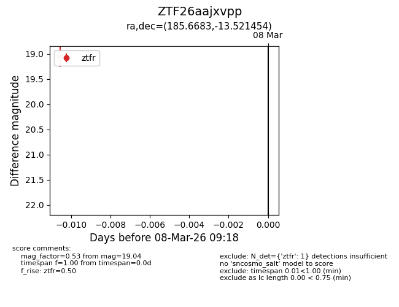
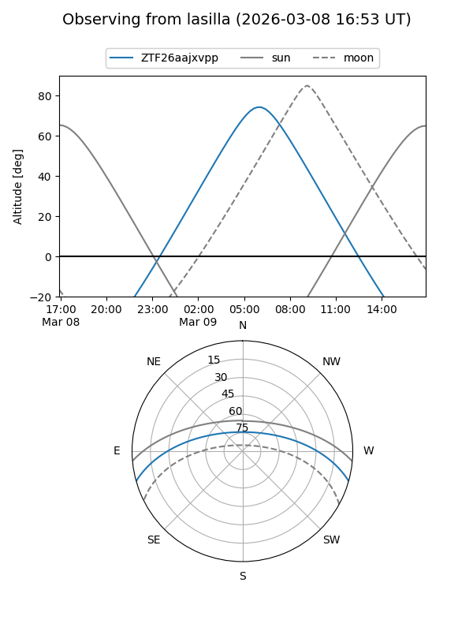
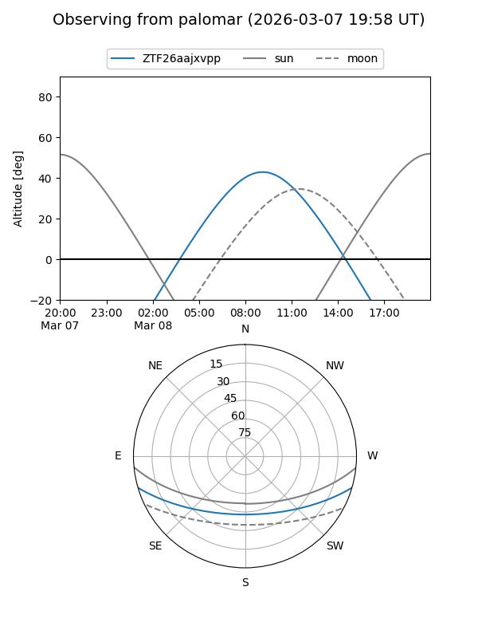

ZTF26aajxvpp
Target ZTF26aajxvpp at 2026-03-08 09:19
Aliases and brokers:
FINK: link
Lasair: link
ALeRCE: link
alt names
ZTF26aajxvpp (ztf,fink_ztf)
Coordinates:
equatorial (ra, dec) = 185.6683,-13.52145
equatorial (HMS+DMS) = 12:22:40.39,-13:31:17.23
galactic (l, b) = (292.2934,+48.75521)
Flags:
Photometry:
last ztfr=19.04
1 ztfr detections
Lightcurve

Visibility


Additional plots